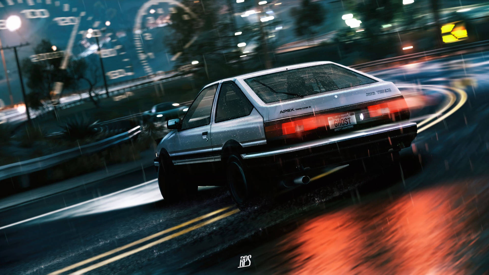
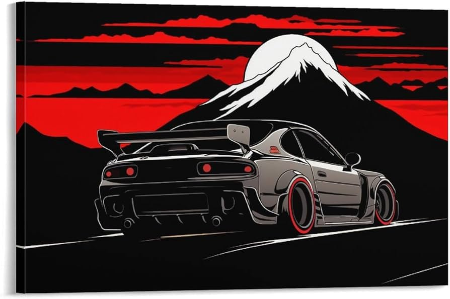

お誕生日おめでとう
[ 三郎 · Saburou · 平城 ]
🌊 あなたが見える ~ 見てるよ 🌊
import "initial-S/SA94"
Takumi manejaba tofu de noche en el Akina. Saburou maneja Go en Arch a las 3am. Básicamente lo mismo, pero mucho mejor con Sabu siempre es mucho mejor. あなたが見える


type Saburou struct {
}
func playlist() []Track {
}
var terminal = "saburou@archlinux"
return "fav waifu"
func mensaje() string
Ole Sabu, que cumplas muchos más rodeado de lo que más te gusta: velocidad a full, Japón en el alma, Arch que no rompe (mentira sí rompe), Go que compila a la primera, y monas chinas de cinco estrellas. Que este año arranque en primera y no pare, igual que el AE86 de Takumi bajando el Akina a las 3am. 🏎️🌸
ハッピーバースデー！いつもありがとう、三郎。